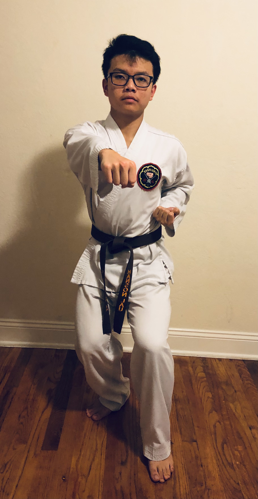
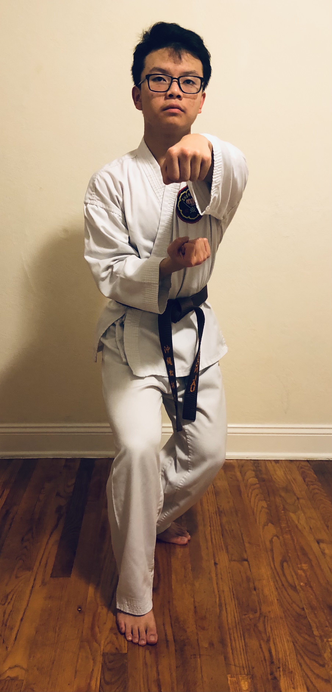

Description
Rohai, the 12th kata. Kosaku Matsumora is believed to be the creator of the kata and Anko Itosu developed the kata more. The name Rohai translates to "white heron" or "white crane". This name reflects a block within the kata that is performed standing on one leg with two open hand blocks. The kata alos includes a combination of a grab followed by a double punch. Rohai introduces a lower open-hand strike as well as a crescent kick. Certain verisons of Rohai end with two open middle blocks and some with three.
Steps
Please use desktop to view moves introduced in this kata
Moves that are introduced in this kata
D
E
F
E
N
S
E

A
T
T
A
C
K
- 
- 